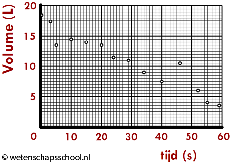

Om erachter te komen hoe je geluid kunt opslaan moet je eerst weten wat geluid is. Geluid bestaat uit trillingen/golven. Deze trillingen bewegen zich door de lucht op het moment dat er iets wordt afgespeeld. Nu je weet hoe geluid werkt is de vraag 'hoe sla je dit op?'. Het opslaan van geluid wordt net zoals bij het binaire stelsel gedaan met nullen en enen.
Als je geluid wilt opslaan moet je het ook eerst kunnen ontvangen. Dit kan bijvoorbeel met een microfoon. De microfoon zet dan de geluidgolven/trillingen om in een soort elektrisch signaal. Je apparaat kan dit elektrische signaal omzetten naar een digitale waarde. Dit noem je een sample. Je kunt als je bijvoorbeeld elke 2 seconde de sterkte van het geluid meet, er een grafiek van maken.
